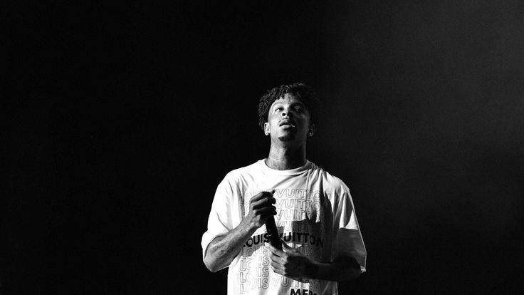
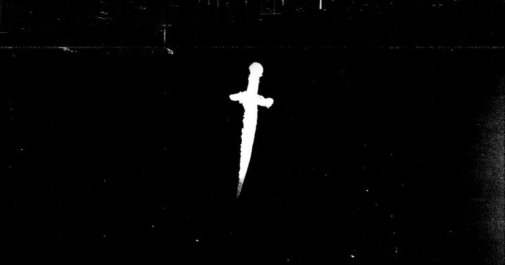

21 Savage is a British rapper, songwriter, and record producer based in Atlanta, Georgia. He gained attention in the Atlanta underground for the 2015 mixtape The Slaughter Tape before attaining nationwide attention following an EP with producer Metro Boomin called Savage Mode (2016) and its popular singles "X" and "No Heart", as well as guest features on Drake's 2016 single "Sneakin'" and Post Malone's 2017 single "Rockstar".


Get the latest news about 21 Savage
You can find the latest and previous news about 21 Savage, including his music, concerts, and celebrity life.